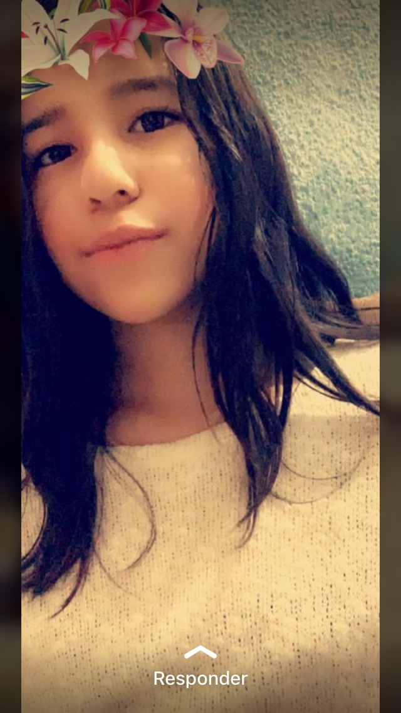

Stefanny Sarai Miranda Ruiz

En este grupo lo que hago al igual que mis demas amigos es contribuir y ayudar para crear o guiarlos en "GitHub".
Mis pasatiempos favoritos son:
1) Oir musica.
2) Ver peliculas de disney Me encantan.
3) Me encanta practicar deportes en especial el futbol.
Jonathan Alexander Paiz Pereira
En este grupo yo solo soy el encargado de transcribir el codigo que mis amigos ya han hecho, dar algunas correcciones
y por ultimo subirlo a GitHub y enviarlo al profesor Elmer.
Mis pasatiempos favoritos son:
1) Oir Musica del genero Rock
2) Me encanta jugar y ver gameplays de Injustice 2 mobile.
3) Me gusta ayudar a mis amigos su puedo
Todos estos participantes somos deGrado de 5to bachillerato en Ciencias y letras con orientacion en Computacion seccion "A"
Atributos de la etiqueta <"hr">
1 id
2 class
3 style
4 title
5 lang
6 dir
7 align
8 noshade
9 size
10 width